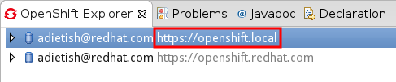
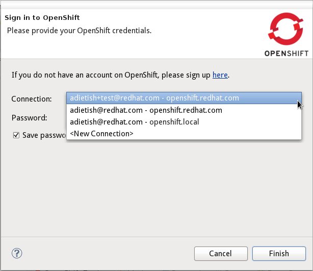

< JBoss AS Server Tools Maven Tools >
Support multiple servers |
|
| Custom server when connecting |
Before Beta1 there was no way to define a server for the Eclipse tooling only.
You had to set the server in the rhc configurations: ~/.openshift/express.con and
/etc/openshift/express.conf. OpenShift for JBoss Tools was always referring to the
server in those configuration files.
In Beta1 we now allow you to define a server independetly of any express.conf. When you create a new connection you can provide the server you want to deal with: openshift.redhat.com, a local liveCD, an instance within its LAN etc. But you may of course leave the server alone and stick to the default that's defined in the express.conf: The server in a connection gets displayed in the OpenShift explorer:  The server is also shown in the connection setting of the server adapter:
|
| Use existing connection |
In Beta1 the connection dialog allows you to create a new connection but it'll offer you
to choose existing ones. Simply select among the available within the combo that lists
the existing connections.
 |
Server logs |
|
| Tail files now for php applications |
Before Beta1 you could only look at the server logs for a JBoss AS running on OpenShift.
For all other OpenShift applications, the console with the log showed up, but did not display
any valuable information. We fixed this in Beta1 and we now also support php applications
|